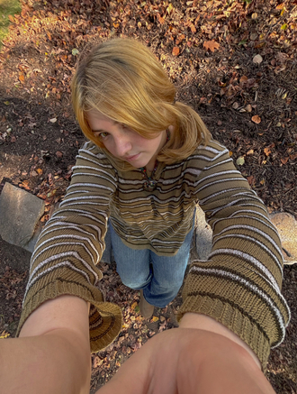

about me
hi! my name is mariya kasumova and i am a third year english major at the university of massachusetts amherst! besides english, i also study psychology and am earning a certificate in professional writing and technical communication. i love to make fun programs and read and write in my spare time! i love to research new topics that interest me and read up on my current obssesions (right now i'm speed running claymation...wish me luck). going to concerts and listening to music are some of my most favorite things to do, and in the other hours you'll find me channeling my zen through yoga and pilates! in my professional portfolio, you'll be able to find my work, my resume, and my contact information. contact me -- let's do something great together.